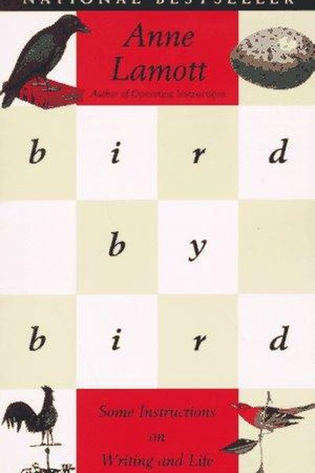

Library › Creativity
Bird by Bird — Summary & Key Lessons

Some instructions on writing and life — the funniest, kindest book about creativity ever written.
📖 OPEN THE FULL INTERACTIVE BREAKDOWN →🌐 Read it in Hindi, Hinglish, Gujarati, Tamil & 22 more languages — free, with audio.
💡 The Big Idea
Anne Lamott's Bird by Bird is a writing book that is secretly a life book. Her wisdom: every writer starts with 'shitty first drafts' — the good stuff comes only after you let the bad stuff pour out. Take your work 'bird by bird' — one small step at a time, because the whole picture is paralyzing. And underneath it all: write to find out what you think, not to be impressive. The book's tone is the lesson: honest, funny, and completely without pretension.
🧠 The 5 Key Lessons
Lesson 1: Shitty First Drafts
Getting Started
Lamott's most famous gift: no one writes well on the first pass — everyone writes shitty first drafts, even the greats. The first draft is you telling the story to yourself, getting it all down while the pressure is off. Almost all good writing begins with terrible first efforts; the polish comes later, in the drafts that follow.
📖 Example: Lamott describes schoolkids' first essays and the terror of the blank page — then her own process of writing 'a really shitty first draft' that she just fills with anything, even 'balloons of confusion,' because you can't fix what doesn't exist yet. Read the full example →
⚡ Do this: Give yourself permission: write your next first draft badly on purpose. Just get it out. Do not edit until it exists.
Lesson 2: Bird by Bird: Small Steps Beat the Big Picture
Getting Started
The title story: Lamott's ten-year-old brother froze for three days trying to write a report on birds — until their father sat down and said, 'Bird by bird, buddy. Just take it bird by bird.' Creative work paralyzes us when we look at the whole; it becomes possible when we look at the next small unit of it.
📖 Example: A book is a series of days, a report is one bird at a time, a career is one project at a time. Lamott's own writing comes out of 'one paragraph at a time, one page at a time' — the only way it ever arrives. Read the full example →
⚡ Do this: Break your current overwhelming task into its smallest unit ('one bird'). Do only that today. Tomorrow, the next bird.
Lesson 3: Perfectionism Is the Voice of the Oppressor
Perfectionism
Perfectionism is not a high standard — it's a tyrant that keeps you from ever finishing. It's the enemy of the people: it makes you revise until the life is gone, or avoid starting because it can't be perfect. Lamott's cure: lower the bar for the first draft to 'get it down,' and accept that good is enough for the rest.
📖 Example: Lamott recalls a student who polished one page for months while the rest of the project rotted. The writers who finish aren't the most talented — they're the ones who accept 'good enough' and move on. Read the full example →
⚡ Do this: Finish something this week at 'good enough' level — then notice that the world didn't end and the work actually exists.
Lesson 4: Write to Find Out What You Think
Getting Started
Don't write to impress, publish, or win — write to discover what you actually think and feel. The page is a place to find out. When you stop performing and start exploring, the writing gets honest, and honest writing is the only kind anyone can't fake. This also dissolves writer's block: you're not being judged, you're just looking.
📖 Example: Lamott wrote Bird by Bird about her own struggles — she had no grand plan, just the process of figuring out her relationship with writing on the page. The book became a classic precisely because it wasn't trying to be one. Read the full example →
⚡ Do this: Write one page today on something you're confused about — not to conclude, just to see what you think.
Lesson 5: Take Care of Yourself, Take Care of the Work
Writer's Block & Community
Lamott's practical ethics: show up for the work daily, but also show up for yourself — eat, rest, take walks, and spend time with people who replenish you. The writing life is long and can be lonely; community and self-care are not rewards for writing, they're fuel for it. Find your people — even two of them.
📖 Example: Lamott describes the support of her writing group and her friends — the people who read her drafts and reminded her to eat. Her sobriety, she says, is a writing tool: you can't make art from a wrecked vessel. Read the full example →
⚡ Do this: Identify your two 'writing people' — honest readers who cheer you. Schedule one check-in with each this month, and one genuine rest day.
✅ 5-Step Action Plan
- Write a deliberately terrible first draft this week.
- Take your project bird by bird — one smallest unit today.
- Finish one thing at 'good enough' and let it exist.
- Write one exploratory page about something you're confused about.
- Schedule rest and one honest-reader check-in this month.
⚠️ When This Doesn't Work
Lamott's 'write shitty first drafts, take it bird by bird' is the kindest writing advice ever — and Tumblr is the reminder that communities, like drafts, need tending: Tumblr built the most creative, loyal community on the internet — and its corporate parent never understood what it had, let it starve, and fire-sold it for $3 million after Yahoo paid $1.1 billion. The book teaches you to tend your work daily; the warning is that other people's neglect can undo your tending. Own the platform your art lives on, or the platform will own you.
💀 The Graveyard Proves It
🩺 Tumblr — From $1.1 Billion to $3 Million: The Internet's Greatest Fire Sale. Burn: Bought for $1.1B, sold for $3M — a 99.7% loss. Read the full case study →
💬 Best Quotes from Bird by Bird
- “Almost all good writing begins with terrible first efforts.”
- “Perfectionism is the voice of the oppressor.”
- “Thirty years ago my older brother, who was ten years old at the time, was trying to get a report on birds written... he was immobilized by the hugeness of the task ahead. Then my father sat down beside him and said, 'Bird by bird, buddy. Just take it bird by bird.'”
Interactive version: mark lessons as read, listen in your language, share quote cards.